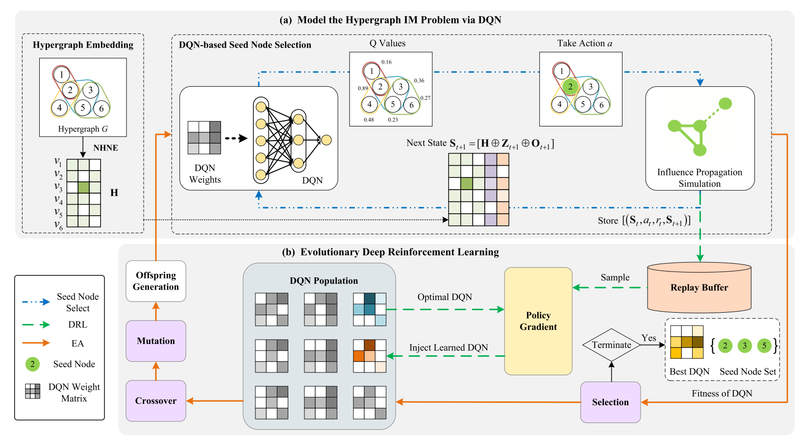
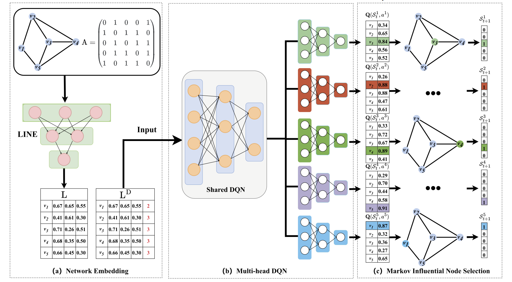
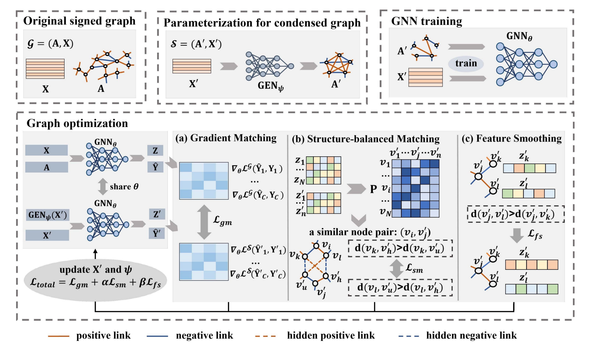
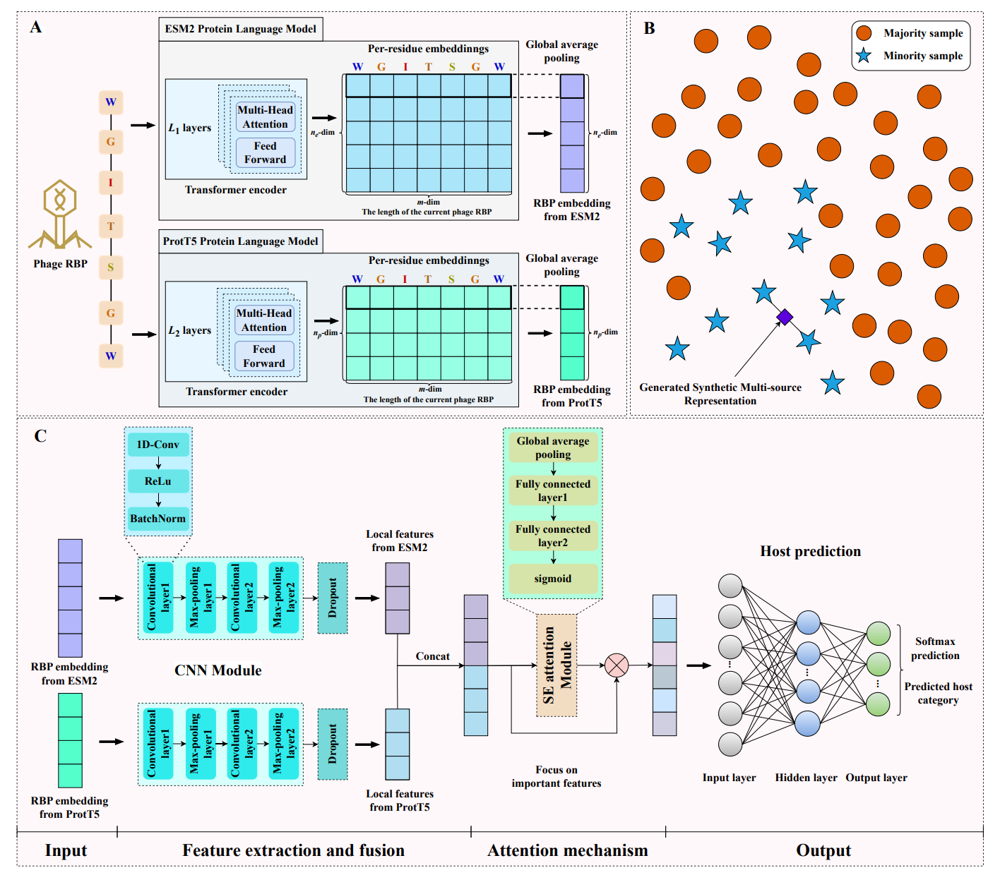
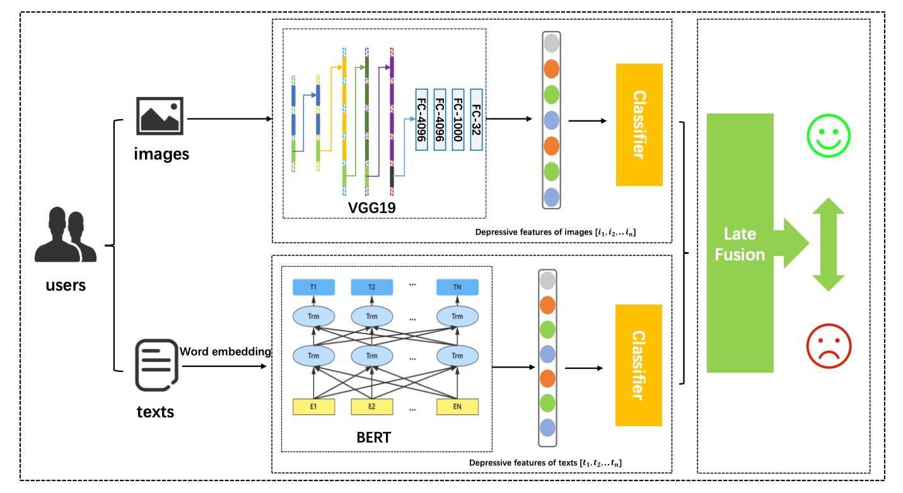
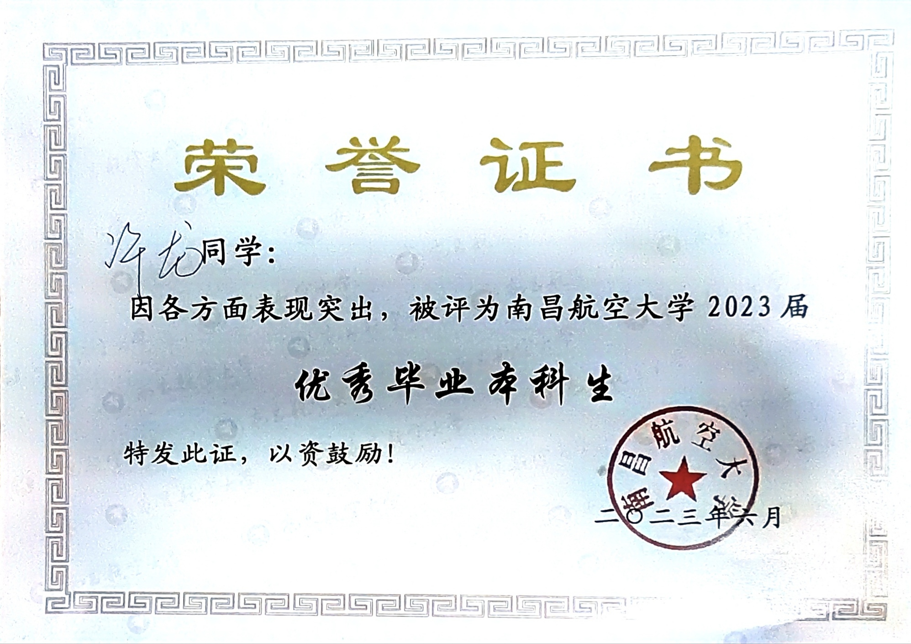
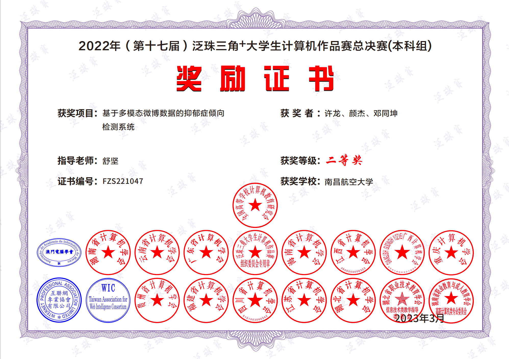
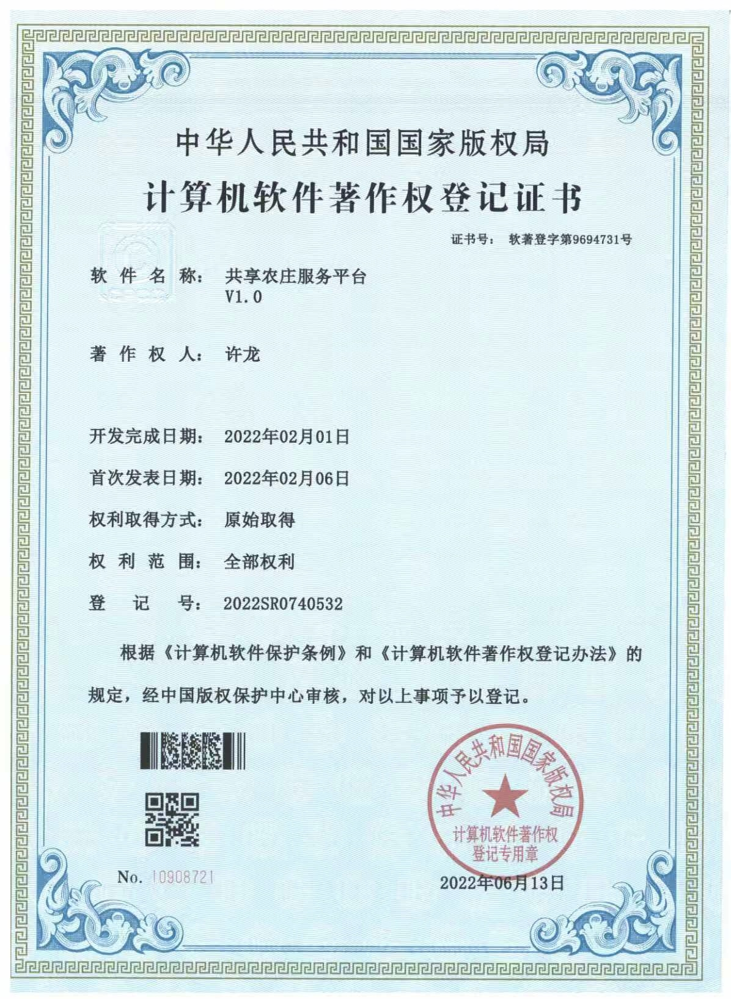
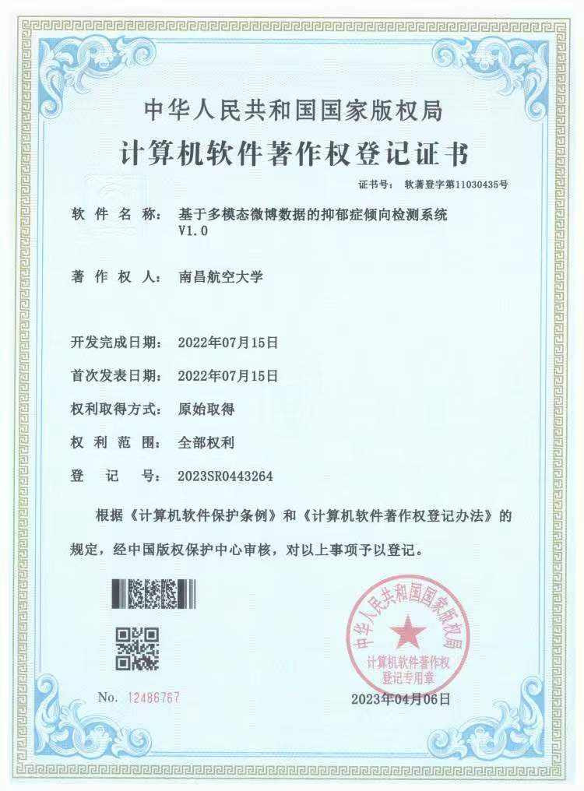
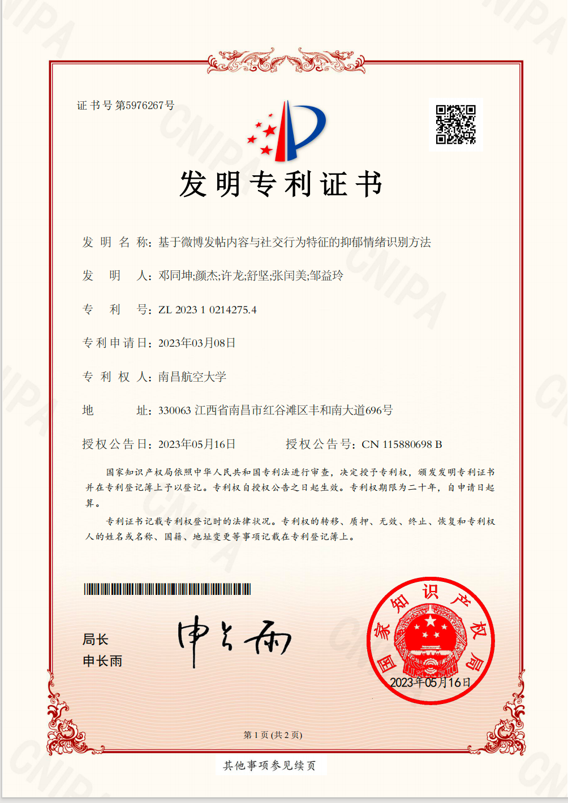

Longxu XU (许龙)
🎓 3rd-year Graduate Student @ Shenzhen University📚 Embodied AI & Robotics Researcher & Artificial Intelligence


|
|
Education

|
Shenzhen University (SZU) B.Eng. (currently studying) in Computer
Science and Technology
GPA 3.3 / 4.0
Master. Student
supervised by Prof. Lijia
Ma.
Sep. 2023 - Jul. 2026
|
|
Nanchang Hongkong
Nanchang University
GPA 3.9 / 4.0 (top
0.0072%)
BS. Student
supervised by Prof. Jian
Shu.
Sep. 2019 - Jun. 2023
|
Publications
Full List
|

|
Influence Maximization in Hypergraphs based
on Evolutionary Deep Reinforcement Learning

Long Xu*, Lijia Ma†, Qiuzhen Lin,
Lingjie Li,
Maoguo Gong, Jianqiang Li
Information Sciences. (中科院1区, CCF B) IF
6.79
|
|

|
Multifactorial Evolutionary Deep
Reinforcement Learning for Multitask Node Combinatorial Optimization in Complex
Networks
Lijia Ma, Long Xu*, Xiaoqing Fan, Lingjie Li,
Qiuzhen Lin,
Jianqiang Li, Maoguo Gong
Information Sciences. (中科院1区, CCF
B) IF 6.79
|
|

|
Structure Balance and Gradient
Matching-based Signed Graph Condensation.
Rong Li, Long Xu*, Songbai Liu, Junkai Ji, Lingjie Li, Qiuzhen Lin, Lijia
Ma†
The 39th Annual AAAI Conference on Artificial
Intelligence. (CCF A)
|
|

|
Phage Host Prediction Using Deep Neural
Network with Multi-source Protein Language Models and Squeeze-and-Excitation
Attention Mechanism.
Peng Gao, Long Xu*, Yuan Bai, Qiuzhen Lin, Junkai Ji, Lijia
Ma†
IEEE Journal of Biomedical and Health
Informatics, 2025. (中科院小类 1区, CCF C)
|
|

|
Research on Depression Tendency Detection
Based on Image and Text Fusion.
Long Xu*, Xin Shu, Jian Shu†
2022 International Conference on Artificial
Intelligence and Big Data (ICAIBD)
|
Honors
| 国家奖学金 National Scholarship 🏆 |
| 南昌航空大学成才路上好青年 （全校仅10人） 🏆 |
|  | 南昌航空大学优秀毕业生（获得率为1.25%） |
|  |
2022年(第十七届)泛珠三角+大学生计算机作品赛总决赛(本科组) 二等奖
15个省市地区（含港澳台）高校参加，从千余个参赛作品中推荐出58个优秀作品进入总决赛资格。26个参赛作品进入总决赛答辩，最终评出本科组一等奖10个、二等奖16个和三等奖32个
|
|  | 许龙*. 软件著作权：共享农庄服务平台V1.0，证书号：软著登字第10908721号. |
|  | 许龙*. 软件著作权：基于多模态微博数据的抑郁症倾向检测系统V1.0，证书号：软著登字第11030435号. |
|  | 邓同坤、颜杰、许龙*. 发明专利：基于微博发帖内容与社交行为特征的抑郁情绪识别方法，专利号：ZL202310214275.4. |
🎬 Projects Demo
以下视频为对Pi0模型进行微调优化，并在方舟无限机械臂平台完成杯子抓取、收纳碗筷、积木收纳等任务的部署与性能验证。
放杯子
放积木
放水果
放碗筷
以下为基于用户微博文本、图片及社交行为数据构建多模态抑郁倾向检测系统，实现了从数据采集到可视化展示的完整链路。
基于深度学习的微博数据抑郁倾向检测系统